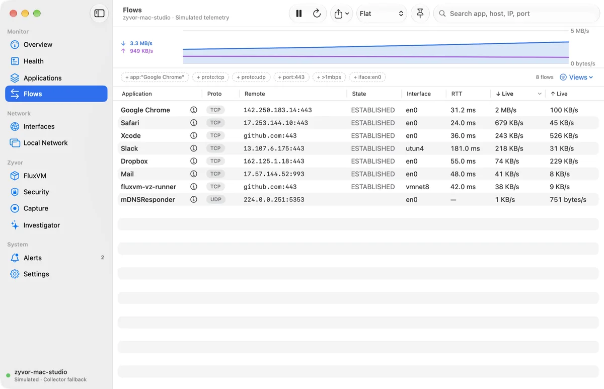
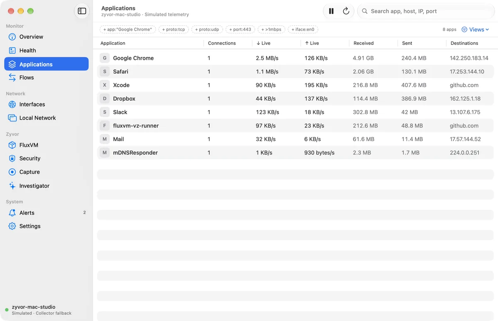
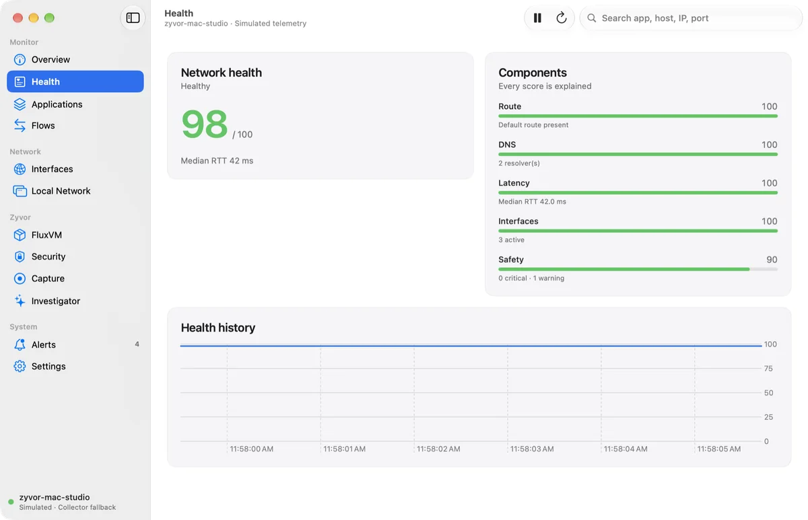
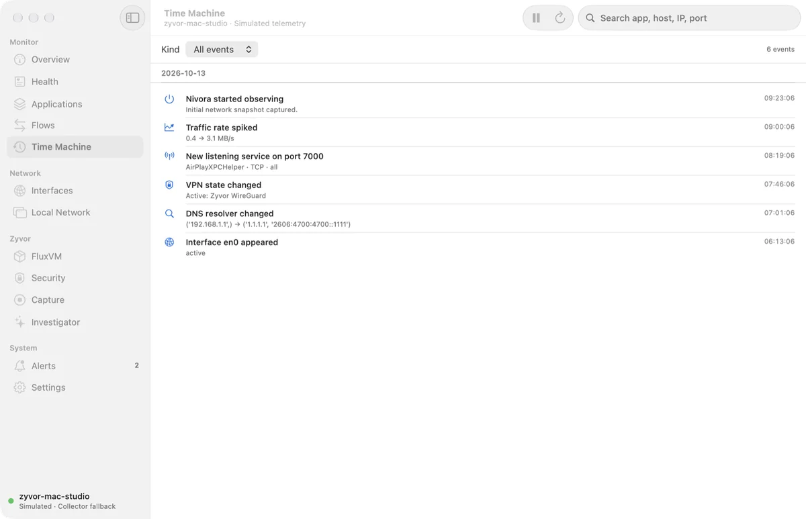
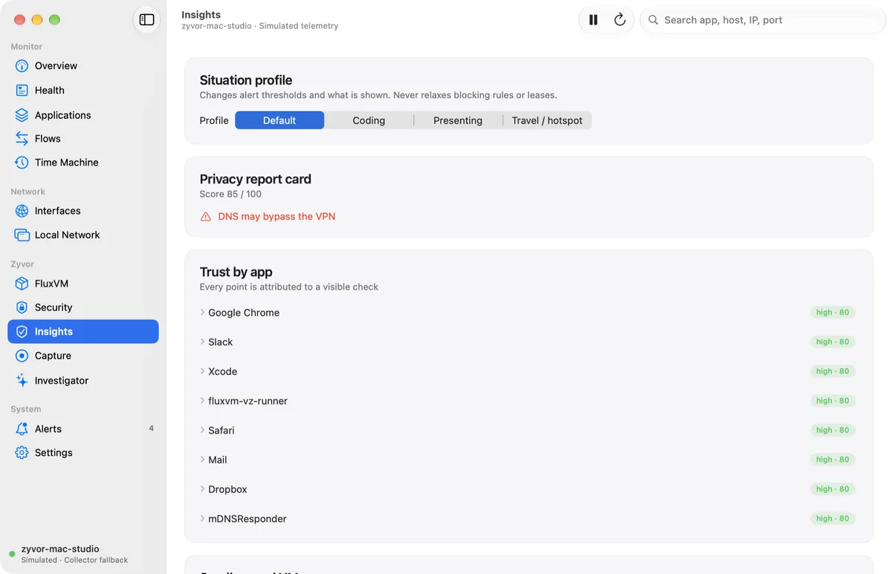
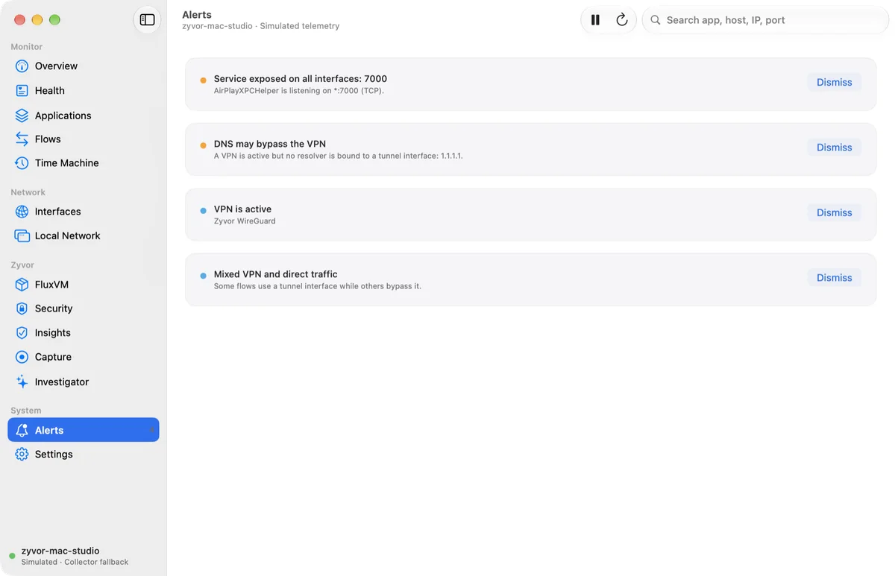

Zyvor · network intelligence
Nivora
See every connection on your Mac.
Which app is talking to what, over which interface. Per-app flows, DNS, routes, VPNs, listeners and FluxVM workloads in a native SwiftUI app. Local-first and observe-first: no payloads, no uploads, nothing blocked unless you say so.
Download the 30-day trialLearn more
macOS 15 or later · Apple silicon · notarized · The app runs without a key. For a free 30-day trial key, email sales@zyvor.dev. The trial is soft: nothing is disabled and no data is lost.

Your Mac talks to the network all day. Now you can listen.
Nivora turns raw connections into answers: who, where, how much, and over which interface.
Features
Applications
See who is talking.
Traffic grouped the way you think about it: by app, with live rates and destinations.
Release notes
Flows
Every connection, with its interface.
Protocol, remote, state, interface and RTT per flow, plus a share menu and grouping.
The filter grammar
Health
98 out of 100, and why.
A score built from route, DNS, latency, interfaces and safety. Nothing is a black box.
Release notes
Time Machine
What changed, and when.
Events stored locally in SQLite: DNS resolver changes, VPN state, new listeners, spikes.
Release notes
Insights
Trust, attributed.
A per-app trust score where every point maps to a visible check.
Release notes
Alerts
Alerts that only explain.
Exposed services, DNS that may bypass the VPN, mixed tunnel traffic. Alerts never block.
Release notes
And the rest of the toolbox.
Take the evidence with you
CSV, JSON or NDJSON, optionally redacted of private IPs, MACs, SSID and hostname. Never packet payloads. Export API.
FluxVM aware
When FluxVM is running, Nivora reads its local API on 127.0.0.1:7788 and shows its VMs and sandboxes beside host traffic. FluxVM integration.
Ask from your tools
A read-only MCP server and a command line with JSON output expose summary, flows, explain, diff and trust. Nothing that changes rules. MCP setup.
Policy as code
Keep rules in a file, plan them against the live rule store, apply only when you say so. Dry-run by default; blocks stay leased.
Private by design.
Local-first
No account, no cloud, no telemetry upload. The API listens on loopback with a random bearer token.
Observe-first
Rules default to observe. Block rules are one-hour leases and need the signed content filter to take effect.
No payloads
Flow metadata only. The one exception, packet capture, is off until you start it, headers-only, capped and deleted after 24 hours.
Specs and requirements.
- Requires
- macOS 15 or later
- Chip
- Apple siliconOther Macs and macOS versions are not exercised.
- Build
- Signed and notarizedNotarized by Apple; macOS shows its standard first-open confirmation for apps downloaded from the internet.
- Version
- 0.5.4The app runs without a key. For a free 30-day trial key, email sales@zyvor.dev.
- Collector
- Dependency-freePer-app attribution uses the built-in collector.
- Data
- Local-firstNo account, no cloud, no telemetry upload.
One honest limit
The notarized build has no content filter and no capture helper: both need an Apple NetworkExtension entitlement we do not have. Per-app attribution uses the built-in collector instead. Details: content filter and entitlements.
Get started in three steps.
Download
Get
Nivora-0.5.4.dmgand its.sha256checksum from the release page.Verify and install
Check the download with
shasum -a 256, open the DMG and drag Nivora to Applications.Open and add your key
Open Nivora. macOS shows its standard first-open confirmation. Enter the free 30-day trial key (sales@zyvor.dev) under Nivora > Licence….
Nivora 0.5.4 for Mac · SHA-256
6765d67f2dae19259b66f6c0e18f7f88db9f0d05be5c9aae2fb5134e2fc49440Verify: echo "6765d67f2dae19259b66f6c0e18f7f88db9f0d05be5c9aae2fb5134e2fc49440 Nivora-0.5.4.dmg" | shasum -a 256 -c
Licence and pricing.
Nivora is early. Free for non-production use. For production use, including business and commercial use, buy a licence: INR 999 incl. 18% GST in India (about US$10 excl. tax outside India), one-time. Prices: INR incl. 18% GST in India; US dollars excl. tax elsewhere (VAT, GST or sales tax added where applicable). Pay online by UPI, card or netbanking; international cards work (charged in rupees); or request a US-dollar invoice by bank transfer. Custom pricing: contact sales@zyvor.dev. Need something customised, a company invoice or multi-entity terms? Write to sales@zyvor.dev.
Signed & notarized
Signed with our Apple Developer ID. Notarized by Apple; macOS shows its standard first-open confirmation for apps downloaded from the internet. It uses the built-in collector; it does not include the content filter or the capture helper, which need Apple entitlements we do not have.
INR 999 incl. GST (about US$10 excl. tax outside India) · one-time business-use licence
A purchase licenses business and commercial use of that version and later ones on machines you own or operate. It does not cover redistribution or resale. Several companies or a larger rollout: sales@zyvor.dev. Licence terms. After payment you get a GST invoice and a download link by email. Earlier paid purchases keep their perpetual licence and need no key.
Questions, answered.
Does Nivora see inside my traffic?
No. It records which app talks to which endpoint, how much, and over which interface. Packet capture is a separate, opt-in feature that keeps only packet headers by default.
Does it block anything?
Not by default. Rules start in observe mode. Blocking needs the signed content-filter extension and your explicit rule, and expires after an hour unless made permanent.
What is verified, and what is not?
The notarized app: Apple notarization accepted and stapled; Gatekeeper accepts the DMG and the app, also with a download quarantine flag; the app launches and its bundled collector serves data the app decodes. Checked on Apple silicon. Not exercised: other macOS versions and Intel (the app is Apple silicon only), the content filter and capture helper (not in the notarized build, not tested end to end), and the widget, Shortcuts and Siri phrases.
Is there a free trial?
Yes: a free 30-day trial key from sales@zyvor.dev. It is a soft trial: nothing is disabled and no data is lost when it ends.
Will macOS warn me when I open Nivora?
The download is signed with our Apple Developer ID. Notarized by Apple; macOS shows its standard first-open confirmation for apps downloaded from the internet. Verify the checksum on the release page if you like. See the install guide.
Which macOS versions?
macOS 15 or later, on Apple silicon.